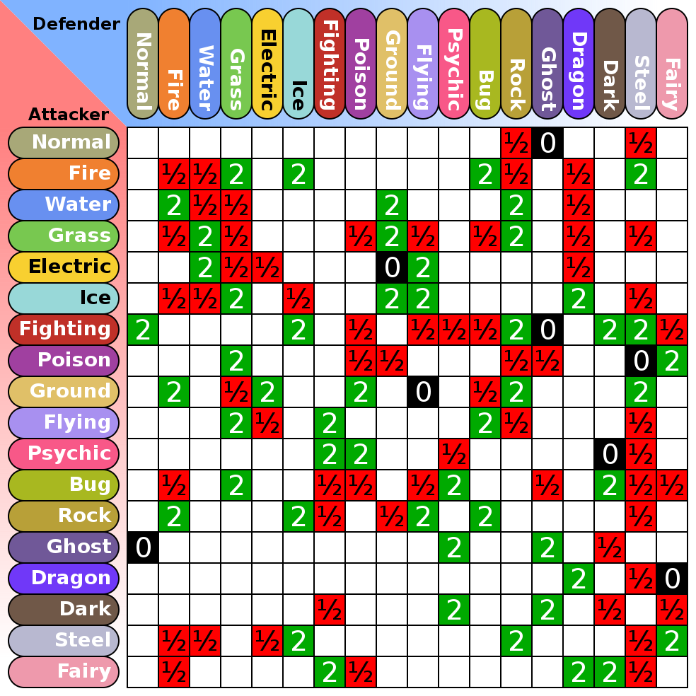

Damage Calculator
Defense
- Begin at the bottom left of the grid. Move through the X-axis (left and right). Find your Pokémon type.
- After finding your type, begin to move up the Y-axis (up and down).
- Everything in this line is what your Pokémon is weakest or most durable against.
- The higher the number, the higher the damage taken.
- For example, if you are a Grass defender and your opponent is Fire attacker, you will receive double damage (x2) as indicated by the "2" in the box.
Attack
- Begin at the bottom left of the grid. Move up the Y-axis (up and down).Find your Pokémon's move type
- After finding your type, begin to move through the X-axis (left and right).
- The higher the number, the higher the damage done.
- Everything in this line is what your Pokémon's move type will do the most or least damage to.
- For example, if you are a Grass attacker and your opponent is a Fire defender, you will do half damage (1/2) as indicated by the "1/2" in the box.
Notes
For further help, please visit Pokémon Type Calculator. This website allows for the input of two Pokémon types, searching for other Pokémon, and generates results. Making it more able to provide better help. This website was also my inspiration.